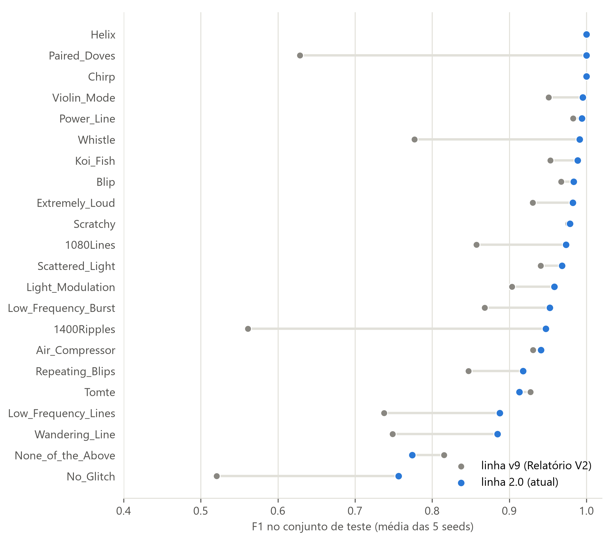
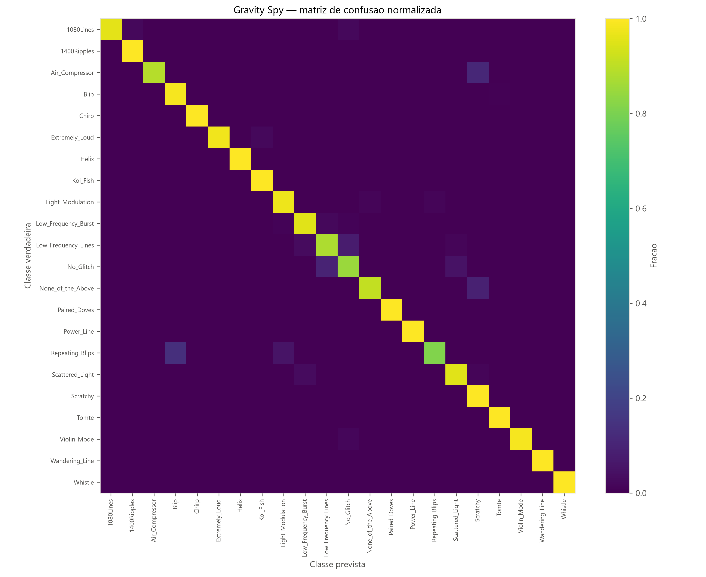

Uma rede neural treinada em glitches do LIGO consegue reconhecer os eventos reais de ondas gravitacionais?
Projeto 3 – Ondas Gravitacionais · PIC Astronomia · linha gwproject 2.0, 218 eventos do GWTC-4 · 20 de outubro de 2026
Resumo
Os detectores de ondas gravitacionais registram, além dos sinais astrofísicos, muitos ruídos curtos de origem instrumental, os glitches. Treinamos uma rede neural para classificar esses glitches a partir de imagens tempo-frequência do projeto Gravity Spy e a aplicamos aos 218 eventos reais do catálogo GWTC-4. A rede melhorou de forma clara: com dados de treino limpos e um protocolo mais rigoroso, sua nota de acerto passou de 0,856 para 0,945. Nos eventos reais, porém, as imagens são diferentes demais das de treino, e a rede as reconhece como estranhas: todos os 475 sinais são rejeitados como “fora do domínio”. Desenhar as imagens na mesma escala do treino reduz essa diferença e faz a rede apontar “Chirp” nos eventos mais fortes, mas a maior parte desses casos continua rejeitada. No momento, a rede neural melhorou, mas ainda não consegue identificar os eventos reais de forma confiável.
0,945
nota de acerto (macro-F1) nos glitches de teste — era 0,856
475 / 475
sinais reais rejeitados como “fora do domínio” (renderização padrão)
17 / 475
sinais que a rede reconhece como familiares com a renderização exploratória
+0,50
correlação entre a força do evento (SNR) e a fração “Chirp” (exploratório)
1. A pergunta
Em poucas palavras. Ensinamos uma IA a reconhecer “tipos de chiado” do detector. Agora queremos saber se ela também consegue olhar para as ondas gravitacionais de verdade e dizer algo útil sobre elas.
Os interferômetros LIGO (H1, L1) e Virgo (V1) medem deformações do espaço da ordem de 10−21. Nessa sensibilidade, vibrações, falhas eletrônicas e luz espalhada produzem glitches, transientes curtos que podem imitar ou esconder um sinal astrofísico. O projeto Gravity Spy reuniu cerca de 8 mil imagens de glitches rotuladas por voluntários em 22 classes, e redes treinadas nelas classificam bem os glitches.
A pergunta deste trabalho é de validade externa: um classificador treinado nos painéis do Gravity Spy pode ser aplicado às imagens dos eventos reais do catálogo GWTC-4? Se pudesse, seria uma ferramenta automática para examinar a vizinhança de cada detecção. Se não pudesse, é importante saber por quê, para que ninguém confie nas respostas dele sem verificação.
2. Como o estudo foi feito
1. DadosStrain dos 218 eventos do GWTC-4, baixado do GWOSC (475 sinais aproveitáveis)
→
2. ImagemBranqueamento e transformada Q: imagem tempo × frequência de 140 × 170
→
3. Rede5 ResNet-18 treinadas no Gravity Spy (ensemble); cada uma dá a classe mais provável
→
4. “Conheço isto?”Teste fora de distribuição: a imagem se parece com as de treino?
→
5. ExplicaçãoGrad-CAM: onde a rede olhou para decidir
Em poucas palavras. Transformamos o sinal de cada detector numa “foto” do som ao longo do tempo, mostramos a foto a cinco redes neurais e perguntamos duas coisas: que tipo de sinal é, e se a rede já viu algo parecido.
Treino. 7.807 imagens do Gravity Spy, depois de remover 159 painéis vazios repetidos (5.472 para treino, 1.177 para validação e 1.158 para teste). Cinco redes ResNet-18 foram treinadas com pontos de partida aleatórios diferentes (seeds), e suas respostas são combinadas (ensemble).
Classificação forçada. A rede sempre escolhe uma das 22 classes, mesmo diante de algo que nunca viu. Por isso a classe sozinha não basta.
Teste “fora de distribuição” (OOD). Dois medidores dizem se a imagem é familiar: a distância de Mahalanobis (quão longe ela fica das imagens de treino no “espaço interno” da rede) e o escore de energia (quão segura a rede está). Cada um tem um limite, o q99, calibrado para que só 1% das imagens normais o ultrapassem. A imagem recebe uma de três decisões: rejeitada (fora do domínio), revisar ou candidata em domínio.
Renderização. A forma de converter a energia em tons de cinza. A padrão (percentis) estica o contraste de cada imagem; a exploratória (escala Gravity Spy) imita a escala das imagens de treino.
3. Resultado 1 — a rede aprendeu bem os glitches
Em poucas palavras. Nas imagens do próprio Gravity Spy, a rede acerta cerca de 96% das vezes, e ficou bem melhor que a versão anterior.
Métrica no conjunto de teste (5 seeds)
Linha v9 (Relatório V2)
Linha 2.0 (atual)
Macro-F1 (acerto equilibrado entre as 22 classes)
0,856
0,945 ± 0,009
Acurácia balanceada
0,844
0,946 ± 0,012
Acurácia
0,909
0,965 ± 0,004
Referência simples (regressão linear)
–
0,797
A melhora vem principalmente da limpeza dos dados: um painel vazio aparecia 161 vezes com rótulos diferentes e confundia a rede (errata do Relatório V2). As classes mais beneficiadas foram Paired_Doves, 1400Ripples, Whistle e No_Glitch. As mais difíceis continuam sendo as classes “genéricas”, No_Glitch (0,76) e None_of_the_Above (0,77), que por definição reúnem imagens variadas. Duas classes ficaram levemente abaixo da linha v9 (Tomte e None_of_the_Above), dentro da variação entre seeds.

Figura 1 – Acerto (F1) por classe, linha v9 × linha 2.0. Média das 5 seeds no conjunto de teste. O teste da v9 incluía 21 cópias do painel vazio; o da 2.0, não.

Figura 2 – Matriz de confusão (seed 42). Cada linha mostra, para uma classe verdadeira, a fração de imagens atribuída a cada classe. A diagonal quase completa indica poucos erros; as confusões restantes envolvem No_Glitch e None_of_the_Above.
4. Resultado 2 — nos eventos reais, a rede não reconhece as imagens
Em poucas palavras. Diante das ondas gravitacionais de verdade, a rede “estranha” todas as fotos: elas não se parecem com nada do treino. Então a resposta dela para esses casos não tem valor.
Com a renderização padrão, os 475 sinais dos 218 eventos ultrapassam o limite de Mahalanobis em todos os cinco modelos e são rejeitados como fora do domínio. Nenhum fica em “revisar” ou como candidato em domínio. As classes forçadas mostram o que acontece quando se ignora esse alerta: a rede distribui quase todos os sinais entre duas classes genéricas, None_of_the_Above (243) e Extremely_Loud (231), inclusive o GW150914, a primeira onda detectada.
Uma auditoria indica que essas respostas dependem de propriedades globais da imagem, e não do sinal: nove estatísticas simples de brilho preveem se a rede dirá None_of_the_Above com acurácia balanceada de 0,769 (AUROC 0,817). É o comportamento de um classificador fora do seu domínio, que responde a “atalhos” da imagem.
Por que as imagens são tão diferentes? As imagens de treino vêm de painéis prontos do Gravity Spy, com fundo cinza e uma escala de cores fixa. Os Q-grams dos eventos são produzidos pelo nosso pipeline, com outra escala de intensidade, janelas centradas em fusões de buracos negros e, em muitos casos, sinais fortes. A rede aprendeu a aparência específica das imagens de treino, e qualquer mudança sistemática nessa aparência basta para tirá-la do domínio.
5. Resultado 3 — desenhar na escala do treino aproxima, mas não resolve
Em poucas palavras. Quando desenhamos as fotos dos eventos com as mesmas cores das fotos de treino, a rede passa a achar muitas delas familiares e chama os eventos mais fortes de “Chirp”. Mas ela fica insegura, e a maior parte desses casos ainda é rejeitada.
Mesmos 475 sinais, modelos e limites — muda só a renderização
Padrão (percentis)
Escala Gravity Spy
Rejeitados (fora do domínio)
475
253
Em revisão
0
205
Candidatos em domínio
0
17
Acima do limite de Mahalanobis
475
49
Acima do limite de energia
0
228
Confiança média do ensemble
0,735
0,536
Sinais classificados como Chirp
0
58 (em 46 eventos)
Figura 3 – O que a rede vê. Linha de cima: eventos com a renderização padrão (fundo preto, ruído realçado). Linha do meio: os mesmos eventos na escala Gravity Spy. Linha de baixo: imagens de validação do Gravity Spy, que a rede conhece. A escala Gravity Spy aproxima a aparência das imagens de treino.Figura 4 – Efeito da renderização. À esquerda, a distância ao domínio cai para perto do limite. No centro, as decisões. À direita, a fração de sinais chamados de Chirp cresce com a força do evento (SNR de rede), o que só acontece na escala Gravity Spy.
O resultado é promissor, mas incompleto, por três motivos:
Os dois medidores discordam. A distância de Mahalanobis passa a dizer “familiar”, mas o escore de energia, que antes não rejeitava nada, passa a rejeitar 228 sinais, porque a rede fica menos confiante. Enquanto essa discordância não for entendida, não há critério seguro de “em domínio”.
Os acertos aparentes não são confiáveis. Os sinais chamados de Chirp nos eventos mais fortes (GW230814, GW231226, GW230627, GW200129, GW150914) são, na maioria, rejeitados como fora do domínio. O GW150914, por exemplo, é Chirp nos dois detectores, mas rejeitado em H1 e só “em revisão” em L1.
Os 17 candidatos em domínio são todos No_Glitch (SNR de rede entre 7,6 e 14,5; 4 deles do Virgo): a rede reconhece como familiar justamente o que se parece com ruído comum, não os sinais.
6. Onde a rede olha — Grad-CAM no GW150914
Em poucas palavras. Na escala Gravity Spy, a rede presta atenção exatamente na curva da onda. É um bom sinal, mas mostrar onde ela olha não prova que a resposta é confiável.
Figura 5 – Renderização padrão: o modelo da seed 42 responde Extremely_Loud.Figura 6 – Escala Gravity Spy: o mesmo modelo responde Chirp (p = 0,86), com a atenção máxima (vermelho) sobre a trilha do sinal.
7. Diagnósticos físicos
Duas análises independentes da rede usam as massas publicadas no catálogo como ponto de partida e servem de checagem do pipeline, não de detecção:
Ridge (estimativa da massa de chirp pela curvatura do sinal na imagem): 201 ajustes aceitos em 475 sinais, com erro relativo mediano de 34,7% em relação ao catálogo.
Filtro casado local (comparação com formas de onda teóricas): 164 eventos analisados; nenhum passa em todos os critérios do diagnóstico completo.
Esses números confirmam que o pipeline recupera parte da física dos eventos, mas não sustentam medição independente de massa, detecção nem taxa de falso alarme.
8. Conclusão
A rede neural melhorou. Com a limpeza dos dados de treino, o treino determinístico e a calibração do teste fora de distribuição, o classificador passou de macro-F1 0,856 para 0,945 nos glitches do Gravity Spy, acerta as 22 classes de forma equilibrada e tem um critério confiável para dizer quando não conhece uma imagem (1% de alarmes falsos em imagens normais).
Mas ainda não consegue identificar os eventos reais. Com a renderização padrão, a rede declara os 475 sinais dos 218 eventos como fora do seu domínio, e suas classes para eles não têm significado. Com a renderização na escala Gravity Spy, ela se aproxima do domínio e chega a apontar Chirp nos eventos mais fortes, mas a maioria desses casos continua rejeitada, os dois medidores de familiaridade discordam e os únicos sinais aceitos como familiares são classificados como ruído comum (No_Glitch). Não há, hoje, nenhuma configuração em que a rede reconheça os eventos reais de forma confiável.
Vale lembrar que a rede foi treinada para classificar a aparência de glitches, não para detectar ondas gravitacionais: a classe Chirp do Gravity Spy descreve um formato, não uma origem astrofísica. O resultado negativo é, portanto, uma informação útil: ele mostra que um classificador de glitches não pode ser transferido diretamente para os eventos do catálogo, e indica que a diferença de aparência das imagens (a “mudança de domínio”) é o principal obstáculo.
9. Limitações
A comparação de renderizações é exploratória e não foi preregistrada; nenhum limite foi ajustado depois de ver os resultados, mas os intervalos de confiança não têm correção para múltiplas comparações.
A população muda entre treino e uso: o treino tem glitches avulsos; o uso, janelas centradas em fusões. Isso dificulta atribuir a mudança de domínio apenas à renderização.
Os painéis do Gravity Spy cobrem uma faixa de frequência própria, diferente da faixa de 20–512 Hz dos Q-grams do catálogo.
O Grad-CAM tem baixa resolução (9 × 11 células) e foi examinado apenas em exemplos.
10. Próximos passos
Entender a discordância entre os medidores de Mahalanobis e de energia na escala Gravity Spy.
Controles negativos: aplicar o mesmo pipeline a trechos sem evento, para saber como a rede trata ruído puro do catálogo.
Aproximar os domínios no treino: por exemplo, treinar ou ajustar a rede com Q-grams produzidos pelo nosso próprio pipeline, ou com injeções sintéticas de chirps.
Preregistrar o teste da escala Gravity Spy, se o grupo decidir seguir por ela, com critério de “em domínio” definido antes.
Redigir o resultado negativo de validade externa como primeiro texto científico.
11. Confiabilidade destes resultados
Todos os números deste relatório foram produzidos numa reprodução independente da linha gwproject 2.0 (Relatório V3). A base de treino e o treino das cinco redes saíram idênticos aos do professor, byte a byte, e o catálogo, as decisões fora de distribuição e o experimento de renderização se repetiram com diferença de no máximo um sinal em 475. A conclusão, portanto, não depende de uma máquina ou execução específica.
Documentos relacionados: Relatório V3 (reprodução), Errata do Relatório V2, Glossário (docs/Glossario.pdf), VALIDATION_REPORT.md e research/RENDERIZADOR_GRAVITY_SPY.md. Figuras 1 e 2: docs/relatorios/fontes/resultados/make_figures.py; Figuras 3 e 4: research/figures/renderizador_gravity_spy_figuras.py sobre as execuções de 17/10/2026; Figuras 5 e 6: gwproject research gradcam.